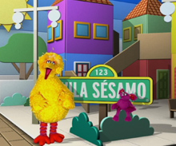

Aprendizado através das mídias
Tecnologias como a TV, vídeos, DVDs e computadores podem expandir as habilidades de pensamento e incitar a imaginação. Elas também podem estimular o amor pelo aprendizado e incentivar a apreciação pela diversidade humana. As crianças vão aprender a partir da melhor mídia aquilo que é envolvente e adequado para seu desenvolvimento. Um programa como Vila Sésamo é um ótimo exemplo de como uma mídia educacional permite a extensão do aprendizado de forma criativa e divertida.
Essas dicas podem ajudar a tirar o máximo proveito das mídias que você escolher usar:
- O uso de um modelo saudável de mídia deve equilibrar o tempo da TV com outras atividades.
- Escolha programas apropriados para o desenvolvimento que se baseiam no interesse das crianças e desenvolva sua imaginação.
- Melhore as oportunidades de aprendizagem, mantendo o seu filho envolvido. Faça uma pausa para pedir previsões, verificar a compreensão, discutir as questões ou revisar o conteúdo abordado.
- A repetição aumenta o aprendizado. Assim como seu filho ama reler livros favoritos, ele também vai gostar de rever os vídeos e jogos de computador. Em cada repetição, ele está construindo um pensamento em cima do que aprendeu.
- Incorpore a mídia de forma conveniente. Tente não se restringir à programação televisiva; se você quiser gastar um tempo extra fora de casa em um dia lindo, fitas de vídeo, DVRs e DVDs permitem que você curta o momento sem perder nada.
- Planeje com antecedência. Se você assistir a um programa antes de compartilhá-lo com seu filho, você pode selecionar o pedaço que gostaria de destacar. Desta forma, você pode ter uma atividade de acompanhamento ou selecionar uma leitura apropriada.
Como integrar diversão e adequar às mídias
Usar a mídia de forma ativa ajuda a preparar a criança para interagir com o conteúdo que ela ouve e vê. A mídia também pode expandir a aprendizagem do seu filho, especialmente quando as aulas são reforçadas com o acompanhamento das atividades.
Aqui, apresentamos alguns passos para integrar a mídia na rotina de seus filhos:
- Decida o que exibir e faça um cronograma. Você pode usar os temas do programa, que estão disponíveis na Internet.
- Planeje questões para serem feitas durante a exibição do programa.
- Planeje atividades. Faça desenhos, desempenhe papéis, crie jogos ou cante músicas que se baseiam no que seu filho tem aprendido.
- Procure livros relacionados ao tema e programe um tempo para lê-los em voz alta com seu filho.
- Prepare seu filho. Quando ele estiver pronto para assistir a um vídeo ou usar o computador, diga à criança o que você espera dela. Mencione algumas coisas que os personagens possam vir a fazer.
- Defina limites de tempo. O aprendizado mais profundo acontece quando a criança aprende com todos os cinco sentidos, assim, alterne entre o tempo de visualização e as atividades que dão ao seu filho a oportunidade de tocar e manipular objetos, mover seu corpo e mudar o foco de seus olhos.
A mídia pode ser um professor efetivo. Seu filho aprende com o que ele vê na tela, mesmo se for um programa violento ou um programa educacional. Você pode ajudá-lo a obter o máximo de conteúdo direcionando-o para programas educacionais compatíveis com a idade dele e usando as atividades relacionadas para aprimorar as experiências de aprendizagem. As atividades que você escolher devem reforçar os temas do programa, e as lições devem ajudar seu filho a apreciar as diferenças e semelhanças (raciais, étnicas, estilos de vida, gêneros, culturais, físicas, idiomas, grupos de famílias e habilidades), e incluem uma grande variedade de materiais para incentivar a criatividade. A visualização, a ação e a leitura podem acontecer em qualquer ordem. A chave é usar as palavras para recordar o seu filho das conexões.
Use a televisão, vídeos ou DVDs
- Mostre para seu filho, através das próprias ações, o que seria legal para cantar, dançar, bater palmas ou brincar, de acordo com o que ele vê na TV.
- Ajude seu filho a identificar formas, cores e números ao repeti-los junto com o programa.
- Faça seu filho explorar os sentimentos ao identificar emoções e nomear o que os personagens estão vivenciando. Ajude a lembrar seu filho de suas próprias experiências e relacioná-las com o que ele vê na TV.
- Responda às questões de seu filho sobre as coisas que acontecem no programa. Ajude-o a compreender conceitos como cooperação e sentimentos, conversando sobre as situações que os personagens vivenciaram.
- Pratique uma sequência pedindo para que seu filho reconte a história que ele viu ou identificar o que aconteceu no começo, no meio e no fim da história.
- Com vídeos e DVDs é possível criar uma experiência interativa usando o botão de pausa. Pause o programa e incentive seu filho a adivinhar o que irá acontecer na sequência. Tenha em mente que muitas interrupções podem ser difíceis para crianças na idade pré-escolar acompanhar a história, a não ser que elas já tenham visto o episódio. Também é possível usar o botão de voltar para praticar habilidades de audição e deixar que seu filho cheque o quão sua memória é apurada.
Use computadores
- Explore o mundo. Se seu filho é curioso sobre um determinado assunto, como elefantes ou África, faça uma pesquisa on-line. Facilmente, você irá encontrar vários websites que podem ser visitados para aprender mais sobre estes assuntos.
- Exemplifique como usar o computador para escrever histórias, fazer arte ou música, descobrir informações, bem como jogar jogos. Nos primeiros anos, seu filho está descobrindo como usar o mouse e o teclado, então, quanto mais simples for o programa, melhor.
- Visite websites de alguns de seus programas de TV favoritos, como o Vila Sésamo, para descobrir atividades relacionadas e mais informações sobre os tópicos abordados.
- Adicione segurança de internet às demais lições sobre segurança. Ensine seu filho a nunca fornecer informações pessoais no computador. Observe antes os websites para ter certeza de que eles são apropriados para a idade de seu filho e que sigam regras básicas de privacidade (ou seja, você está confortável com o modo como eles rastreiam sua atividade on-line e usam sua informação?)
Escolhendo a mídia
As dicas abaixo podem ajudar a escolher uma mídia apropriada que irá aumentar o interesse de seu filho e oportunidades educacionais.
Selecionando programas de TV, Vídeos ou DVDs
Ao selecionar programas de televisão, vídeos, DVDs, pergunte a si mesmo as observações:
- Reflita os valores que você quer ensinar e/ou conteúdo que você deseja partilhar
- Mostra (ao invés de apenas dizer) conceitos chave e repetir ideias importantes de formas variadas para diferentes tipos de aprendizados
- Tem personagens que incentivam a participação e são bons modelos para seu filho
- Incentiva seu filho a usar a imaginação
- Aborda assuntos apropriados para a idade
- Usa uma linguagem que seu filho possa compreender e insere novas palavras para aumentar seu vocabulário
- Dá chances para seu filho praticar solução de problemas
- Faz com que seu filho sinta-se bem sobre ele mesmo e os outros
- Deixa seu filho animado para aprender
- Adiciona novas informações em cima da base de conhecimento de seu filho de forma divertida
- Apresenta conceitos que seu filho está interessado em aprender
- Permite que você tenha discussões sobre
Selecionando softwares ou websites
Quando você considera um software ou programa de computador, pergunte-se:
- Pode ser usado com movimentos fáceis (combinando uma coordenação motora ainda limitada) e responde rápido aos comandos (para que a criança não fique distraída enquanto espera)?
- Oferece desafios com crescente dificuldade enquanto melhora as habilidades de seu filho tanto individualmente quanto em situações em grupo?
- Oferece maneiras para que seu filho esteja interessado nas coisas que acontecem e dá assunto para ele falar sobre?
- Ajuda seu filho a ver causa e efeito ao responder claramente sobre as ações do usuário?
- Oferece oportunidades para seu filho se engajar em solução de problemas?
- Suporta a linguagem que seu filho fala e insere novas linguagens?
Veja também